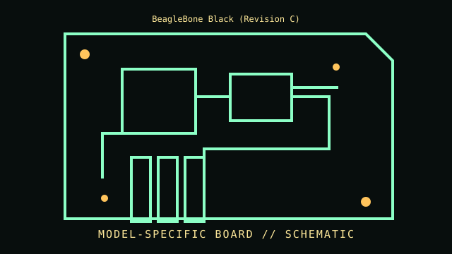

[ INDIVIDUAL COMPONENT // MOTHERBOARDS ]
BeagleBone Black (Revision C)
ARM Cortex-A8 embedded SBC, 2014 revision. This entry documents one exact board model/revision; its specifications are not interchangeable with similarly named variants.

REVISION WARNING: Confirm the PCB silk-screen, assembly/AA code and firmware ID on the actual board. Where documentation does not identify one PCB spin, this record states the exact documented model and explains the revision distinction below.
Specifications
| Exact model / revision | BeagleBone Black PCB revision C |
|---|---|
| CPU / socket | TI Sitara AM3358 Cortex-A8 at 1 GHz; soldered SoC |
| Chipset / platform | TI AM3358 SoC with integrated peripherals and PRU-ICSS |
| Memory | 512 MB DDR3L; 4 GB eMMC on Rev C; microSD boot/expansion |
| Form factor | Compact credit-card single-board computer, approximately 86 × 53 mm |
| I/O and expansion | Two 46-pin 3.3 V expansion headers, micro-HDMI, USB host/device, 10/100 Ethernet, microSD, serial/debug and 5 V DC input |
| Firmware compatibility | No PC BIOS: immutable AM335x ROM boot flow selects boot media; SPL/U-Boot and eMMC image/configuration determine startup |
Compatibility and revision pitfalls
This record is specifically Rev C. Earlier revisions have smaller onboard eMMC (Rev B commonly 2 GB); check PCB revision and eMMC markings. Expansion pins are 3.3 V logic and are not 5 V tolerant. Header compatibility does not ensure cape power or signal compatibility.
Socket fit alone is not proof of support. Confirm the manufacturer CPU support list, the board's minimum BIOS, memory population table, and exact chassis/power requirements before operation.
Preservation notes
Image eMMC and microSD before updates; record boot switches, U-Boot/device-tree version, serial console settings and cape stack. Protect exposed headers from ESD and avoid powering simultaneously through conflicting sources.
Record provenance, date/serial codes, board and firmware revision, known repairs and test conditions. Photograph labels and connectors before cleaning or component removal; retain original firmware and configuration data when possible.
Sources & further reading
- BeagleBoard.org BeagleBone Black — hardware and documentationOfficial board reference with hardware documentation and revision information.
- BeagleBoard.org BeagleBone Black System Reference ManualOfficial BeagleBoard documentation covering interfaces, boot modes, expansion headers and system specifications.
Manufacturer manuals, CPU lists and archived primary documents take precedence over reseller summaries. If an archived support page omits a revision-specific file, do not assume another revision's firmware is compatible.